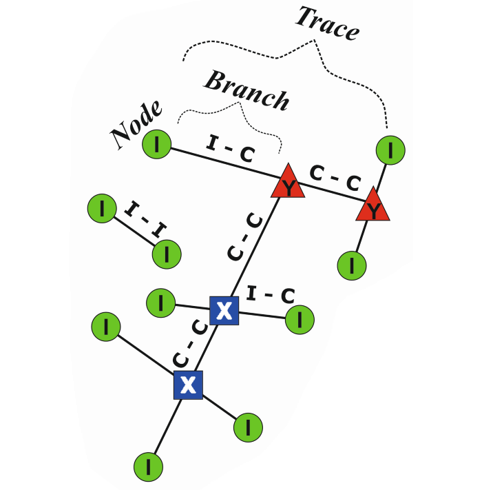

Extracting branches and nodes¶
Prerequisites¶
See: Prerequisites
It is recommended to validate the trace data first before using it as an input for extracting branches and nodes. Otherwise the extraction process might error out or result in invalid branches and nodes.
Branches and nodes¶
Topologically a trace network of lineaments or fractures can be dissolved into branches and nodes. Branches represent individual segments of traces and each segment has a node on each end. Nodes represent either interactions with other traces or isolated abutments. See Sanderson and Nixon, 2015 for a more detailed explanation.
